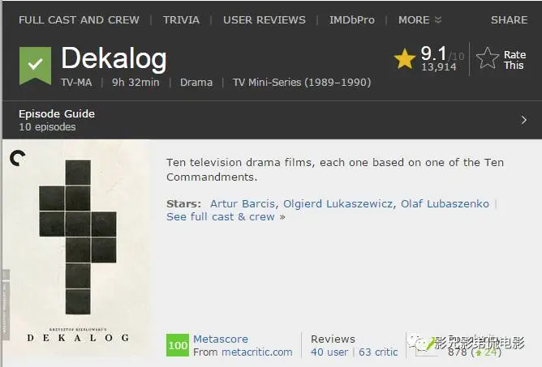
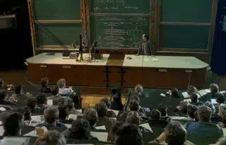
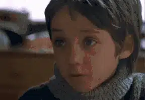
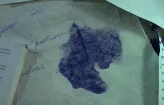
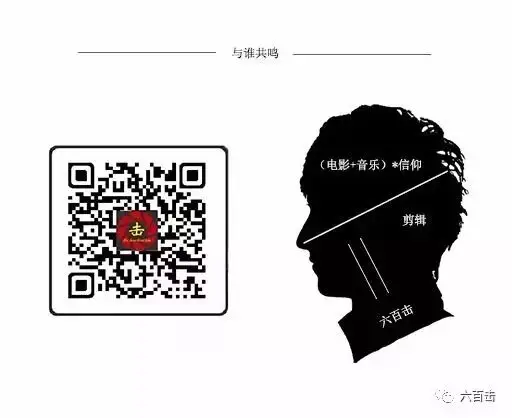

id="js_content" style="">
“我一直不愿意说某位电影人的作品具有某个特质，因为这无可避免地简化了作品本身。但对这部基斯洛夫斯基和克日什托夫·皮尔斯维奇的剧本，这么评论理应是合适的：他们的确具有一种很罕见的能力，能戏剧化地表达他们的观念，而不是简单地谈论它们。他们用戏剧化的情节呈现观点，并得到了一种新的能力，使得观众自己去探索情节内涵，而不是直截告诉他们。他们用如此炫目的技巧做到了这一点，你永远不能看出他们的观点，直到这些观念已如此深刻地直达你的内心。”（《十诫》剧本序言）
-斯坦利.库布里克
豆瓣评分9.0，IMDB评分9.1，烂番茄新鲜度高达100% ，这绝对是一部不可多得的巨著，值得我们花时间去感受。

拍摄十诫的想法最初由克日什托夫·皮尔斯维奇提出，他曾看到一个十五世纪描绘十诫的作品，因而想出了这个点子：一个现代版的十诫。这引起了基耶斯洛夫斯基极大的兴趣，于是，两人合作完成了剧本。本来打算请十个导演去完成拍摄，但是剧本完成后基氏爱不释手，亲自操刀完成了这部巨著，而《十诫》的诞生也让基氏蜚声国际，奠定了其大师的地位。《十诫》所有的故事都发生在华沙的一个住宅区，这个故事的主角会在另一个故事中出现，让人感觉所有的故事都异常真实，每个人的生活都值得细细品味，都有各自的秘密和紧张刺激的事情。十部电影请了九位不同的摄影师，风格却非常的统一，也足以证明导演和编剧的功力。
在开始介绍第一个小故事之前，为了让大家更清楚明白，我们先将基氏的十诫和圣经中的十诫做个区分。
十诫原文
基督教的主题
基斯洛夫斯基的主题
我是耶和华你的神……除了我以外，你不可有别的神。不可为自己雕刻偶像、也不可作什么形像……不可跪拜那些像、也不可事奉他。
上帝的神圣和对他的崇拜
生命的无常(信仰上的对立和宿命)
不可妄称耶和华
话语的神圣性
在抉择之间,生命和诫条的冲突
当纪念安息日
时间的神圣性
时间名称（如节日、日/夜区分）作为意义的承载物
当尊敬父母。
权威的神圣性
家庭和社会关系对个人身份的影响。
不可杀人。
生命的神圣性
杀人和惩罚
不可奸淫。
爱的神圣性
爱和激情的本质，以及两者的关系
不可偷盗。
所属权的神圣性
占有作为人类的需要和诱惑
不可作假见证陷害人。
真理的神圣性
在邪恶之中寻求真理的种种困难
不可贪恋人的妻子
满足的神圣性
性、嫉妒和忠诚
毋贪他人财物。
满足的神圣性
贪欲和人际关系。
第一诫： 一个唯科学主义者的悲剧
《十诫》中第一个故事描写了一个唯科学主义者的悲剧：聪明可爱的小男孩巴伯的爸爸是一位大学教授，他坚持理性至上，深信身边的一切都可以计算，就算是最浪漫的诗也可以通过计算机和数据来实现；而巴伯的姑姑，也就是父亲的妹妹艾琳娜，则是一个虔诚的天主教徒，两个人的思想都影响着可爱的小巴伯。圣诞节前夜，巴伯得到了梦寐以求的礼物——一双滑冰鞋，巴伯打电话要了气象局的天气数据，父亲通过电脑计算了冰面的厚度和承重，父亲自信的告诉小巴伯，就算是三倍重的人去滑冰都没问题。审慎的父亲为了确保安全，还亲自去湖面测试，确保没有任何问题之后，父亲开心的告诉巴伯可以去滑冰了，但最后冰面破了，小巴伯葬身湖底。

父亲是一个大学教授
巧妙的叙事
这个故事描述的非常的细腻，电影只有53分钟，前半部分描述了巴伯和父亲、姑姑艾琳娜之间的亲密关系，并且表现了爸爸与姑姑之间互相冲突的观念。巧妙的是，基耶斯洛夫斯基并没有让爸爸和姑姑之间发生正面的冲突和碰撞，而是通过天使一样的巴伯去彰显这种张力，当小男孩看到死去的流浪狗时，觉得学会算术在流浪狗的死亡面前苍白无力，巴伯产生了疑惑，向爸爸表达了他的困惑，他问爸爸人为什么而活，死亡是什么，而父亲的“物质性”的回答则苍白无力。后面当巴伯和姑姑艾琳娜在一起的时候，他也将自己的疑惑问了姑姑，“真的有上帝么”“他是谁”“为什么爸爸和你不一样”。
这一点基氏是很聪明的，还有什么方式能比在单纯的小孩子身上更能表现戏剧化的冲突呢？而最后天使一般的巴伯的丧命所带给爸爸、姑姑以及观众的冲击力更是巨大的，还有什么能比无辜的小孩去世更悲伤的事呢，爸爸理性至上的偏执带来的代价是沉重的，重到能够最后压垮这位自信的科学家父亲的偏执和骄傲，也促使观众不得不去思考。

巴伯的疑惑
后半部分对于父亲从淡定走向奔溃的描述是极其客观真实的：从得知巴伯没有回家的疑惑，到发现巴伯没有去上英语课的担心，到回到居所的故作镇静，再到得知冰面破裂的难以接受，再到从邻居小孩那得知巴伯之前在湖上滑冰时的崩溃，再到最后看着警察打捞出巴伯尸体时的绝望。基耶斯洛夫斯基一步步的将父亲和观众推向绝望，我们多希望小巴伯忽然出现在屏幕上，他太可爱了，他怎么能死的，他还那么年轻。可惜的是，基氏明白人性的骄傲，但凡有一点可以自己掌控的地方，人都会骄傲的拒绝真实的面对自己的软弱，都会停止思考一切与自己生活无关的东西，基耶斯洛夫斯基也只能“牺牲”无辜的巴伯来逼父亲去思考，真的一切是可以计算么？人真的可以骄傲的将眼睛只定睛在物质上？
神秘主义象征
《十诫》中特别有意思的是，总是有一个阿图尔.巴奇斯饰演的无名角色出现在电影中，他可能是一个超自然的人物，在各集的关键时刻，它往往在一旁观察主角的动作，除了第七、十集，其他集他都出现了，在本集中，它是一个无家可归的男子，在河边烤火，而爸爸在考察冰面时候结实的时候，就注意到了他，他眼里充满了无奈，仿佛知道这个湖面将会是巴伯的葬身之地。在第二集中，他是一个医院清洁工，第三季是一个电车司机，第四集是一个划船的男子，第五集是一个拿着测量杆的工人，第六集是背着杂货包的男子，第八集是大学学生，第九集是一个骑自行车的男子，它的出现，更加加强了电影的神秘性和宿命感。
本集中，还有很多神秘主义的象征，比如说电脑自动启动，两次出现“I am ready”，第一次出现是在艾琳娜邀请爸爸将巴伯送到教会，爸爸拒绝了她，而第二次出现是在悲剧发生之后，仿佛在说“巴伯因为你的骄傲去世了，你准备好接受上帝的存在和自己的有限了么？”。
还有在悲剧发生之前，墨水瓶破裂了，这仿佛预兆着将有不好的事情发生，也使一贯理性的爸爸难以理解，在得知巴伯不见的时候，爸爸焦急的打电话给艾琳娜，但是他并没有说巴伯有可能出事了，而是躲闪其词（若承认则代表他的计算并不是完全可靠的），说墨水瓶无缘无故破裂了，这也足以表达他对于未知的焦虑和恐慌。《十诫》中这些看似不起眼的神秘主义物像也是构成基氏电影丰富内涵必不可少的东西。

唯科学主义的谎言
我真的很佩服基耶斯洛夫斯基对社会的敏锐观察，在基氏创作本片的时候，计算机刚刚起步，并没有进入我们如今的互联网和大数据时代，他已经预见了我们对于网络科技的沉溺。巴伯的爸爸在课堂上说，计算机也有他的品味，预言将来计算机也会产生自己的意志。父亲和他的妹妹艾琳娜出生在一个天主教家庭，当父亲慢慢的发现，身边很多的东西是可以计算的时候，爸爸放弃了天主教，坚信只有是被理性和科学证明的世界才是真正的世界，他对未来是乐观的，相信科学会让人类越来越好，所以他对妹妹的信仰不屑一顾，认为那是软弱者让自己好过的精神鸦片。
的确，我们今天的科技给人类带来了不可思议的变化，人工智能、大数据、云技术，这些都让我们觉得我们要比古代人要更文明、更先进，这些使我们产生了错觉，觉得工具的进步就是人的进步，但是却忘了，我们过去用刀杀人，现在可以用原子弹杀人，人性中的贪婪、嫉妒、分裂从来就没有改变。而理性至上的思想也是一个具有很强迷惑性的谎言，被证明的才是真的，真理是要我们去经历、去判断才是真的，这些看上去很合理也很正常，这些也确实在某种程度上是好的。但是当我们只是承认被证明的真理才是真理，而忽视在有限之外的真理，否认所有先验性的存在的时候，我们就会变得目光狭窄，变成自我的井底之蛙。毕竟，真正理性的人是知道理性有限的人，是愿意敞开去了解和接纳那些人类理性无法企及的东西的人，是承认自己有限，并愿意谦卑的人。
关注并回复十诫获取蓝光内封中字视频资源
关注后转发文章到微信朋友圈，并截图发至公众号送珍藏资源：波兰电视台发行的1080p蓝光资源+外挂中字字幕
相关阅读：走近大师 | 深紫色叙事思想家——基耶斯洛夫斯基
